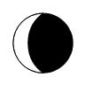

The concept template of the calendar can be seen in this link AstroCalendar grid.
The astronomy calendar will first contain general information concerning the phases of the moon. There will be user friendly images that will let the person know what phase of the moon it is. Ideally there will be information concerning the sunrise/sunset, astronomical twilight and nautical twilight, perhapse also moonrise/moonset. Using free online databases such as http://lite.ip2location.com
the program should be able to use the users current location to determine their relevant sunrise/sunset times.
There will also be legends that will help the user know what images such as:

mean. In this case it means the moon will be a waning crescent that night.
The calendar will also include major national holidays. It will also allow the user to schedule new events.
They should be able to schedule the event name. As well when it begins, ends and whether or not to have reminders.
If the user wishes to have reminders they will also have options as to when they wish to be reminded.
The calendar itself will be represented as a monthly calendar. It will also have the days and the date named. The calendar will also show the completed weekly dates of the previous and coming months as well. There will also be a previous and next button so a person can search through the months if necessary.